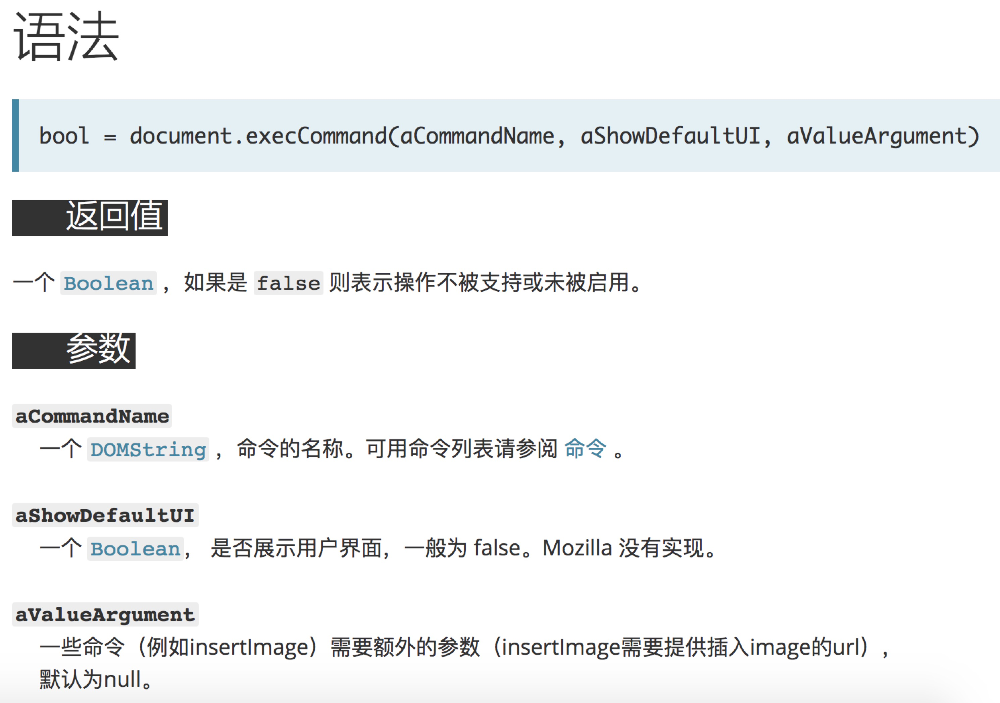
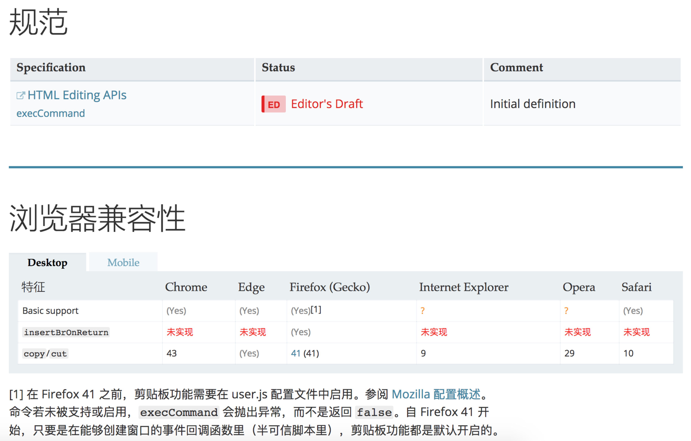

剪贴板事件
剪贴板事件在现在的前端开发中经常会用到，对于现代浏览器来说，可以简单的通过 execCommand 命令来对处于可编辑状态的文字进行一些操作。
这个方法可以做很多操作，比如影响文档的选择（粗体，斜体等），而其他命令插入新元素（添加链接）或影响整行（缩进）等等。这里以复制操作为例，给出一个通用复制方法，同时借此方法说明 execCommand的用法
copyToClipboard = function(textToCopy) {
// 创建一个容器
const textArea = document.createElement('textarea');
// 隐藏位置
textArea.style.position = 'fixed';
textArea.style.left = '-10000px';
// 内容
textArea.value = textToCopy;
// 插入文档
document.body.appendChild(textArea);
// 选中复制文字
textArea.select();
try {
// 复制
if (!document.execCommand('copy')) {
throw new Error('Not successful');
}
} catch (err) {
window.alert('Sorry, your browser does not support copying. Use Ctrl / Cmd + C!'); // eslint-disable-line
}
// 清空
document.body.removeChild(textArea);
}
可以看到，通过execCommand将选中的文本成功的复制到了剪贴板。
下面介绍一下execCommand命令

第一个参数有很多操作，基本能想到的编辑器操作，在这里面都能找的到，但是由于是个草案标准，现在浏览器支持最广泛的还是‘copy’， ‘cut’等常用事件

参考资料：